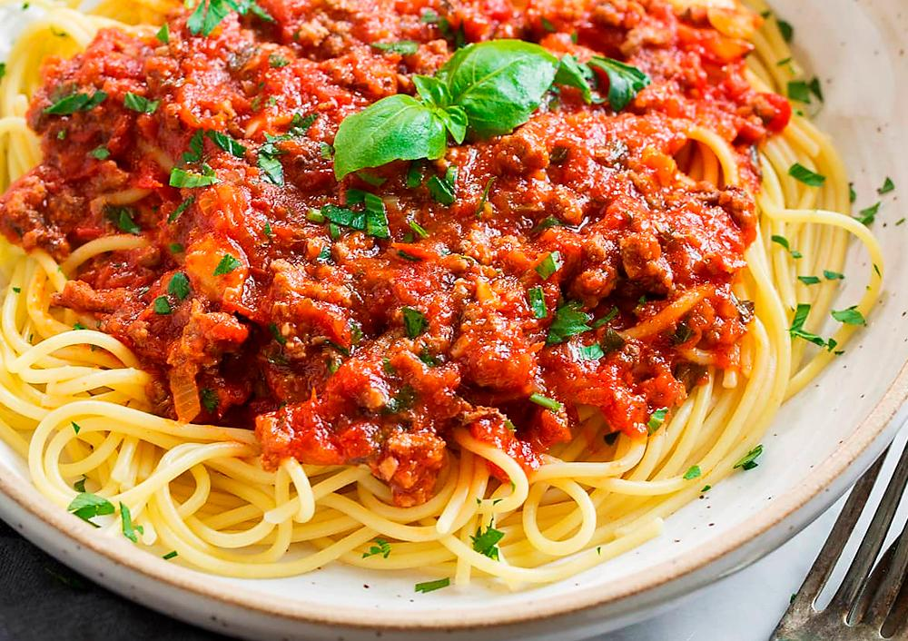

Receita 2 - Macarrão à bolonhesa
Minha opinião
Já experimentei?: Sim
Consideração: É um macarrão com alguns ingredientes que eu não gosto, porém quando eles são combinados juntos à massa do macarrão e molho, a receita geral fica deliciosa para um almoço de domingo.
Com quem eu provaria esse prato?
Érick Jacquin
Apesar de ser um prato italiano e o Jacquin ser francês, seria interessante ouvir dele todos os detalhes a respeito do prato e o porquê ele não é bom o suficiente.
Receita
Ingredientes
- 1 cebola
- 1 colher de azeite de oliva
- 5 azeitonas verdes picadas
- 2 latas de molho de tomate pronto
- 2 Cubos de Caldo de carne ou legumes dissolvidos em 100ml de água
- 1 cenoura
- 2 tomates picados
- 500g de Macarrão
- 500g de Carne Moída
Modo de preparo
Passo 1 - Pique a cebola, refogue por alguns minutos em uma panela com óleo quente até dourar a cebola, mexendo para não queimar.
Passo 2 - Misture a carne moída, deixe cozinhar por alguns minutos.
Passo 3 - Adicione o caldo, o molho, os tomates picados, a cenoura cortada ao meio e mexa bem, deixe cozinhar por aproximadamente 40minutos em fogo baixo com a panela semi tampada. Descarte a cenoura depois que o molho estiver pronto.
Passo 4 - Prepare o macarrão, misture o molho ao macarrão e sirva.
Passo 5 - Acompanhamento Sugerido: Queijo Ralado.